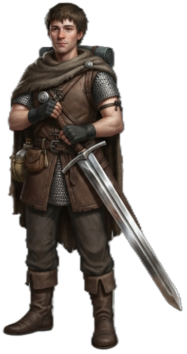

| Rolle | Verteidiger / Frontkämpfer |
| Zauberertyp | Kein Zauberer Keine Zauberslots |
| Primärer Schadensattribut | Stärke (STR) |
| Sekundärer Schadensattribut | — |
| Zauberattribut | — |
| TP (L1) | 10 |
| TP pro Level | 6 |
| Rüstung | Schwer (alle Rüstungen) |
| Waffen | Kampfwaffen (alle) |
| Rettungswürfe | Stärke (STR), Konstitution (CON) |
| Attributsteigerung (Level) | 4, 6, 8, 12, 14, 16 |
| Fertigkeiten (2 zur Auswahl) | Athletik, Einschüchtern, Wahrnehmung, Tierführung, Überleben, Geschichte, Naturkunde |
Der KRIEGER ist der taktische Frontkämpfer — er hält die Linie, unterbricht Gegner und gibt Verbündeten Raum. Seine Stärke liegt nicht in Magie, sondern in Waffenmeisterschaft, Überlegenheitswürfeln und kampftaktischen Manövern. Er ist der universellste Nahkämpfer: robust, flexibel und mit zunehmendem Level immer gefährlicher.
| Level | Fähigkeit | Beschreibung |
|---|---|---|
| L1 | Kampfstil | Auswahl: Bogenschießen / Verteidigung / Duelieren / Zweihandkampf / Schutz / Zweiwaffenkampf |
| L2 | Aktionsstoß | Freie Aktion: eine zusätzliche Aktion pro Zug. 1/Kurze Rast (2 ab L17). |
| L3 | Waffenmeisterschaft | Waffen-Profan-Bonus-Auswahl |
| L5 | Zusatzangriff | 2 Angriffe pro Angriffs-Aktion |
| L10 | Kampfmeister | Überlegenheitswürfel-Pool (4 Würfel, W8 → W10 ab L10 → W12 ab L18) |
| L10 | Entwaffnen | Bonus-Aktion: Entwaffne einen Gegner. 1/Kurze Rast. |
| L11 | Zusatzangriff 2 | 3 Angriffe pro Angriffs-Aktion |
| L13 | Unbeugsamkeit | Rettungswurf wiederholen. 1/Lange Rast (2 ab L13, 3 ab L17). |
| L15 | Freier Rückzug | 1/Zug nach einem Treffer: freier Rückzug ohne Gelegenheitsangriff |
| L17 | Verbesserter Aktionsstoß | Aktionsstoß 2/Kurze Rast |
| L18 | Todeswacht | 1/Lange Rast: überlebe bei 1 TP statt zu sterben |
| L20 | Kriegsveteran | 1/Lange Rast: alle Angriffe einer Runde neu würfeln → automatischer Kritischer Treffer |
| Fähigkeit | Aktion | Nutzung | Level | Beschreibung |
|---|---|---|---|---|
| Zweiter Wind | Bonus-Aktion | 1/Kampf | L1 | Du heilst dich um 1W10 + deinen Level an TP. |
| Aktionsstoß | Freie Aktion | 1/Kampf | L2 | Du erhältst eine zusätzliche Aktion in diesem Zug. (2/Kurze Rast ab L17.) |
| Gefechtsinstinkt | Freie Aktion | 1/Rast | L7 | 1/Kurze Rast — wiederhole einen fehlgeschlagenen Angriffswurf. |
| Unbeugsamkeit | Freie Aktion | 1/Lange Rast | L13 | 1/Lange Rast — wiederhole einen fehlgeschlagenen Rettungswurf. |
| Sturzangriff | Aktion | Überlegenheitswürfel | — | PHYSISCH Wenn du eine Kreatur triffst, kannst du 1 Überlegenheitswürfel ausgeben für +1W8 Schaden. Ziel muss einen Stärke-Rettungswurf ablegen oder umgestoßen werden. |
| Stolzschlag | Aktion | Überlegenheitswürfel | L3 | Ziel muss einen Stärke-Rettungswurf ablegen oder wird umgestoßen (liegend). |
| Einschüchternder Schlag | Aktion | Überlegenheitswürfel | L3 | Ziel muss einen Stärke-Rettungswurf ablegen oder wird 1 Runde verängstigt. |
| Präzisionsschlag | Bonus-Aktion | Überlegenheitswürfel | L3 | +1W8 auf den nächsten Angriffswurf. |
| Sammelruf | Aktion | Überlegenheitswürfel | L5 | Verbündete in 10ft bekommen temporäre Trefferpunkte. |
| Schwungschlag | Aktion | Überlegenheitswürfel | L7 | Spalt-Angriff der 2 Gegner trifft. |
| Fähigkeit | Auslöser | Nutzung | Beschreibung |
|---|---|---|---|
| Parieren | — | Überlegenheitswürfel | Wenn ein Gegner dich mit einem Nahkampfangriff trifft, kannst du 1 Überlegenheitswürfel ausgeben, um den Schaden um den Wurf + Geschicklichkeitsmodifikator zu reduzieren. |
| Erwiderung | — | Überlegenheitswürfel | PHYSISCH Wenn eine Kreatur dich verfehlt, kannst du 1 Überlegenheitswürfel ausgeben, um sofort einen Gegenangriff auszuführen. Bei einem Treffer: Waffenschaden + 1W8. |
| Schutz | Bei Treffer | 1/Zug | Wenn eine Kreatur innerhalb 5ft einen Verbündeten angreift, nutze deinen Schild um den Schaden zu halbieren. |
| Fähigkeit | Beschreibung |
|---|---|
| Hartgedienter Veteran | PASSIV Immun gegen Verängstigung. |
| Ressource | Mechanik | Verfügbarkeit |
|---|---|---|
| Überlegenheitswürfel | 4 Würfel (W8 → W10 ab L10 → W12 ab L18), genutzt von Manövern | Ab L3, Kurze Rast |